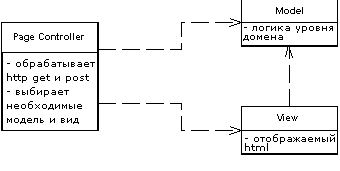

Page Controller (Контроллер страницы)

Паттерн проектирования Page Controller
Описание Page Controller
Объект, обрабатывающий запрос к отдельной странице или действию.
Большинство людей получают первый опыт в веб-программировании на статичных HTML-страницах. Когда происходит запрос к статической HTML-странице, веб-серверу передаётся имя и путь к хранящемуся на нём HTML-документу. Главная идея здесь в том, что каждая страница на веб-сайте является отдельным документом, хранящимся на сервере. В случае с динамическими страницами всё гораздо сложнее, так как сложнее связь между введённым адресом и отображённой страницей. Тем не менее, подход, когда один путь соответствует одному файлу, который обрабатывает запрос достаточно очевиден и прост для понимания.
В результате контроллер страницы (Page Controller) - паттерн, в котором один контроллер отвечает за отображение одной логической страницы. Это может быть как отдельная страница, хранящаяся на веб-сервере, так и отдельный объект, который отвечает за страницу.
Примеры реализации
Использована переведённая иллюстрация с сайта Мартина Фаулера.